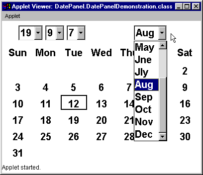

The DatePanel component - visual appearance

The DatePanel is an example of
a developer supplied reusable interface component which conforms
with the philosophy of the pre-supplied components allowing it
to be easily used within an interface.
It is intended to allow the user to easily indicate
any date between 1 January 1900 and 31 December 2100
in an unambiguous manner using the (weak) metaphor of a calendar.
Internationalisation of the DatePanel
will be considered as a refinement after its construction. (Although,
ideally, it should be integrated from the outset.)